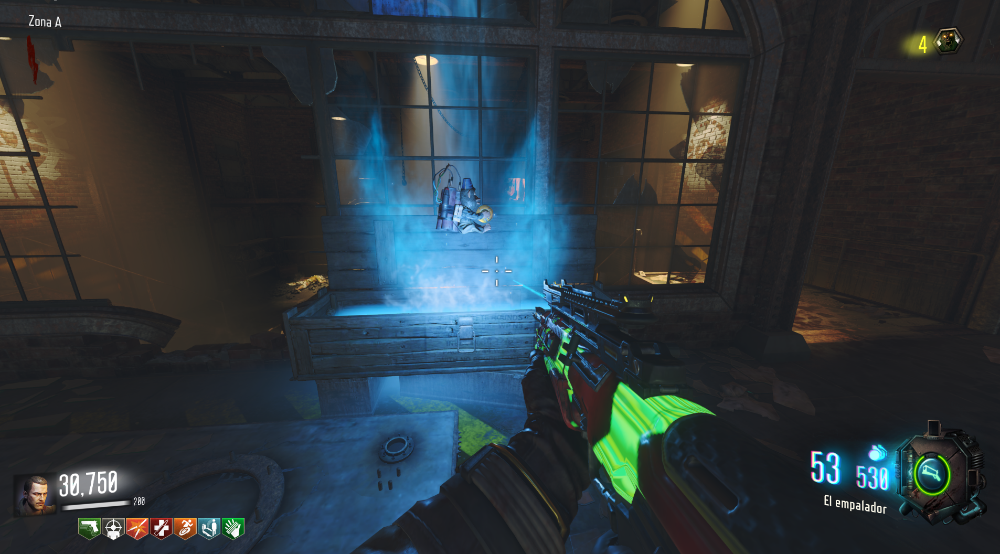
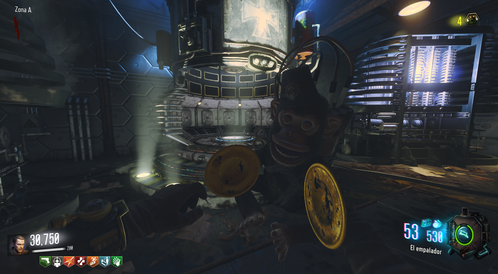
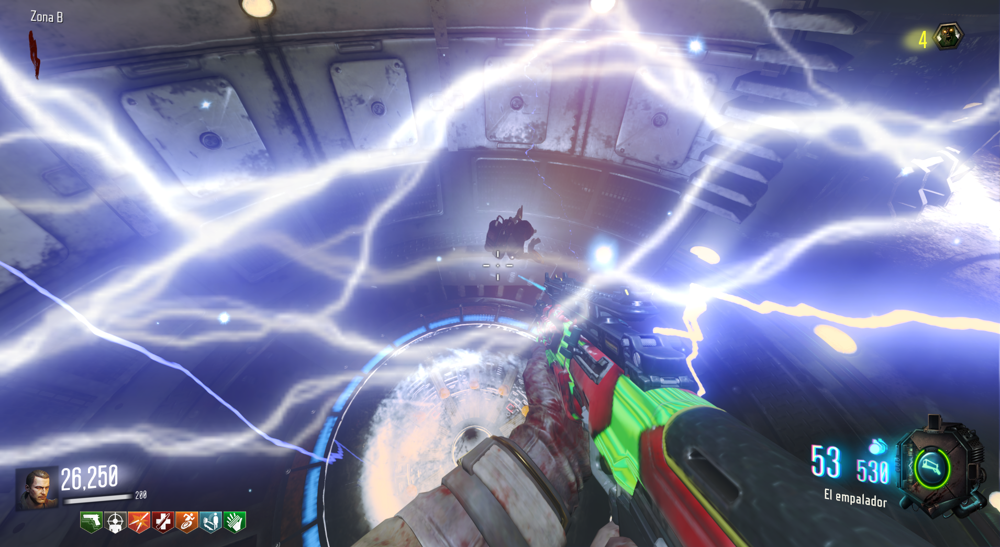
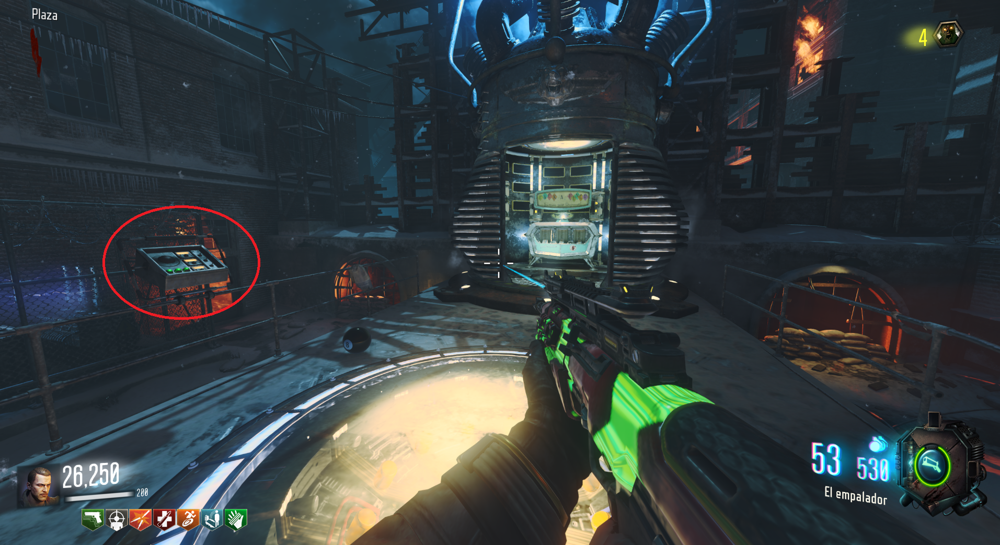
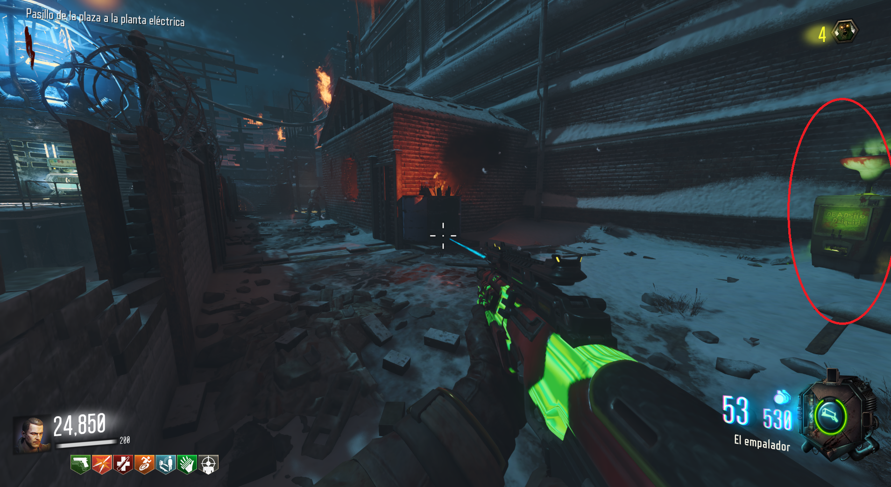

Requisito:
Tener el PaP activado y tener los monos de la caja.

Tendremos que ir a cada uno de los teleporters y lanzar un mono.

Después tendremos que teletransportarnos con él, antes de que explote.

Hecho esto un botón rojo se encenderá, encima de las tres luces verdes en el panel al lado del PaP.

Al interactuar con él, un rayo del gigante se reflejará en varios lugares y derritirá la nieve que escondía al perk.
